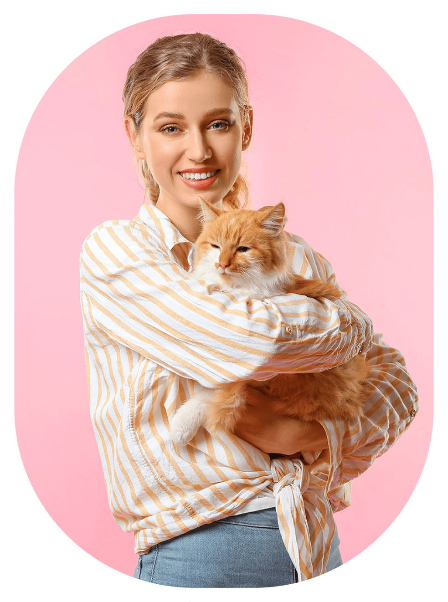
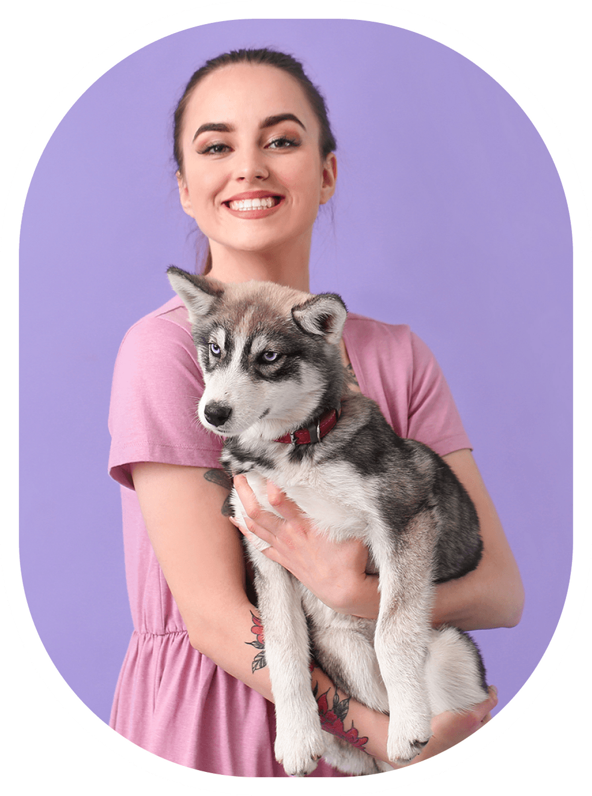

<section class="team">
  <div class="team__container">
    <h2 class="team__title">Meet Our Team</h2>
    <p class="team__subtitle">
      Alice was beginning to get very tired of sitting by her sister on the
      bank.
    </p>
    <div class="team__members">
      <div class="team__member">
        
        <h3 class="team__name">Alina Maisner</h3>
        <p class="team__role">Pet Sitter</p>
        <p class="team__description">
          Alina provides professional pet sitting and dog walking services. She
          has been working in Best.Pet for 10 years already. She loves animals,
          and this feeling is mutual. Alina is attentive and looks after all
          kinds of pets, especially dogs and cats.
        </p>
      </div>
      <div class="team__member">
        
        <h3 class="team__name">Jessica Shimmer</h3>
        <p class="team__role">Veterinarian</p>
        <p class="team__description">
          Jessica is a certified veterinary technician with over 12 years of
          hands-on experience in vet clinics in the USA. Jessica provides
          personal consultations and can make prescriptions but doesn't perform
          any complex procedures at Best.Pet.
        </p>
      </div>
      <div class="team__member">
        
        <h3 class="team__name">Mary Douglas</h3>
        <p class="team__role">Groomer</p>
        <p class="team__description">
          Mary is a professional groomer. She knows how to take care of animals'
          coats so that they always look great and feel good. Mary also provides
          consultations and does everything to keep your fluffy friend happy,
          neat, and healthy.
        </p>
      </div>
    </div>
  </div>
</section>
